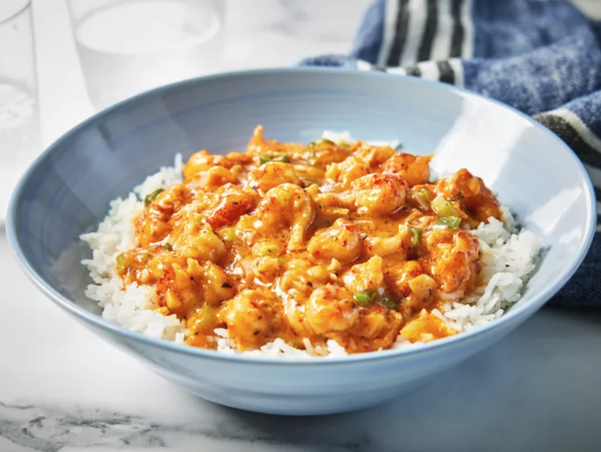

Louisiana Crawfish Étouffée

Crawfish étouffée is a Cajun classic. Here in Louisiana, there's nothing better to make during crawfish season. You can substitute shrimp when crawfish are out of season. It's even better when served with hot garlic French bread! Start cooking the rice first since this is a quick dish.
Ingredients
- Oil
- Sausage
- Chicken
- Spices and seasonings
- Vegetables
- Rice
- Broth
Steps
- Combine rice and 6 cups water in a saucepan. Bring to a boil over high heat. Reduce heat to low, cover the pan, and simmer until rice is tender and water has been absorbed, 15 to 20 minutes.
- While rice cooks, melt butter in a large skillet over medium heat. Add onion and cook, stirring, until transparent. Stir in garlic and cook until fragrant, about 1 minute.
- Stir in flour until blended. Gradually stir in tomato sauce and remaining 1 cup water. Add crawfish tails and bring to a simmer.
- Reduce heat to low and simmer until crawfish is cooked through but not tough, 5 to 10 minutes.
- Serve étouffée over cooked rice.
Home